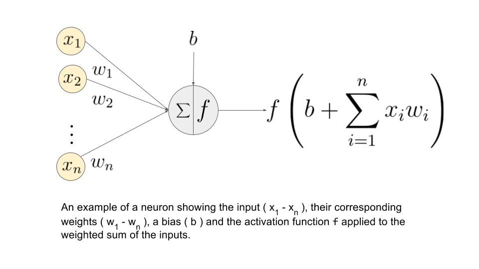

The architecture and behavior of a perceptron is very similar to biological neurons, and is often considered as the most basic form of neural network. Other kinds of neural networks were developed after the perceptron, and their diversity and applications continue to grow. It is easier to explain the constitutes of a neural network using the example of a single layer perceptron.
A single layer perceptron works as a linear binary classifier. Consider a feature vector [x1, x2, x3] that is used to predict the probability (p) of occurrence of a certain event.
Each input in the feature vector is assigned its own relative weight (w), which decides the impact that the particular input needs in the summation function. In relatively easier terms, some inputs are made more important than others by giving them more weight so that they have a greater effect in the summation function (y). A bias (wo) is also added to the summation.

Activation functions are really important for a Artificial Neural Network to learn and make sense of something really complicated and Non-linear complex functional mappings between the inputs and response variable.They introduce non-linear properties to our Network.Their main purpose is to convert a input signal of a node in a A-NN to an output signal. That output signal now is used as a input in the next layer in the stack. Specifically in A-NN we do the sum of products of inputs(X) and their corresponding Weights(W) and apply a Activation function f(x) to it to get the output of that layer and feed it as an input to the next layer.
- Sigmoid
- Tanh
- Rectified Linear(ReLU)
- Softmax


Sigmoid function takes a real-valued number and “squashes” it into range between 0 and 1, i.e., σ(x)∈(0,1)In particular, large negative numbers become 0 and large positive numbers become 1. Moreover, the sigmoid function has a nice interpretation as the firing rate of a neuron: from not firing at all (0) to fully-saturated firing at an assumed maximum frequency


The hyperbolic tangent (tanh) function (used for hidden layer neuron output) is an alternative to Sigmoid function. It is defined by the formula


The ReLU function is more effectively than the widely used logistic sigmoid and its more practical counterpart, the hyperbolic tangent.

In probability theory, the output of the Softmax function can be used to represent a categorical distribution, that is, a probability distribution over K different possible outcomes. In fact, it is the gradient-log-normalizer of the categorical probability distribution. Here is an example of Softmax application
In most learning networks, error is calculated as the difference between the actual output and the predicted output.

The loss functions are helpful to train a neural network. Given an input and a target, they calculate the loss, i.e difference between output and target variable.